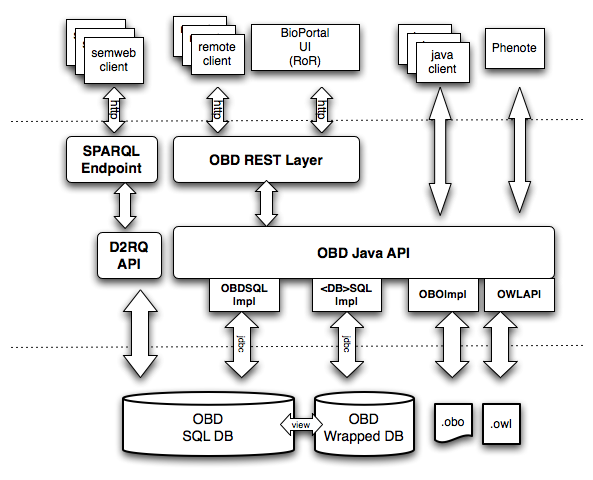

|
||||||||||
| PREV PACKAGE NEXT PACKAGE | FRAMES NO FRAMES | |||||||||
See:
Description
| Class Summary | |
|---|---|
| DescriptionResource | Resource for a CompositionalDescription |
| DescriptionsResource | Resource for a CompositionalDescription collection |
| GraphResource | Resource for a graph |
| HomeResource | Resource for a top level page |
| NestedAnnotationResource | TEST |
| NodeResource | Resource for a Node |
| NodesBySearchResource | Resource for multiple nodes based on search results |
| OBDMain | Command line utils [move?] |
| OBDQueryService | Deprecated. |
| OBDResource | Root class for all OBD resources |
| OBDRestApplication | Main OBD RESTLET application |
| OBDRestApplication.Config | |
| PageResource | Resource for a page (fetched from src) |
| ScoredNodesResource | Resource for a collection of node-score pairs |
| ShardMetadataResource | Resource for metadata on Shard contents |
| SourceResource | Resource for a source node |
| SourcesResource | Resource for a set of source nodes |
| StatementsBySearchResource | Resource for a set of statements returned from a search |
| StatementsResource | Resource for a set of Statements |
Web Service layer, both REST and SOAP based access
Note: SOAP access (via Axis/2) is now deprecated.
The REST layer uses the RESTlet framework.
OBDRestApplication defines the core application and sets up
the REST URL patterns. Each pattern maps to some subclass of OBDResource

Order of events:
Shard is created, pointing at some annotation source(s)
OBDRestApplication
StatementsResource
org.obd.query.Shard#getAnnotationStatementsForNode()
OBOSessionShard or a database via OBDSQLShard )
Graphs, Nodes and Statements are returned
org.obd.model.bridge.
Otherwise the object is passed to a FreeMarker template
|
||||||||||
| PREV PACKAGE NEXT PACKAGE | FRAMES NO FRAMES | |||||||||